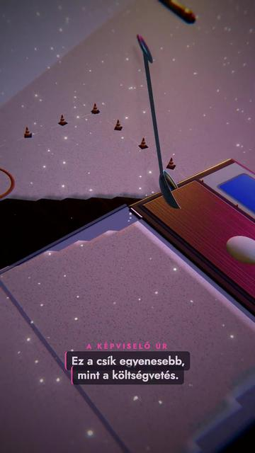

Megnézem a YouTube-onTiszta ügy – új játék a „Csak a végét!” alkotójától #Shorts
Röviden: Éjfél. Egy képviselői asztal, egy kiskanál, és reggel nyolcra mindennek el kell tűnnie.
Éjfél. Egy képviselői asztal, egy kiskanál, és reggel nyolcra mindennek el kell tűnnie. 🥄
Ki a Képviselő úr? Senki. Kitaláltuk. Az a fura, hogy mégis ismerős. 👀
Ingyenes böngészős szatírajáték, telefonon is: https://tisztaugy.pages.dev
18+ · szatíra · minden szereplő kitalált; valós személyre, pártra, hivatalra nem utal.
Hibát találtál? Írd meg nekünk, megnézzük.